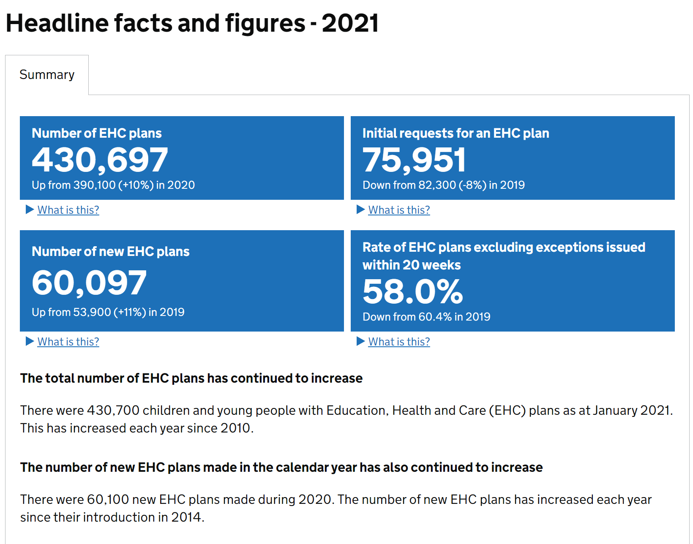
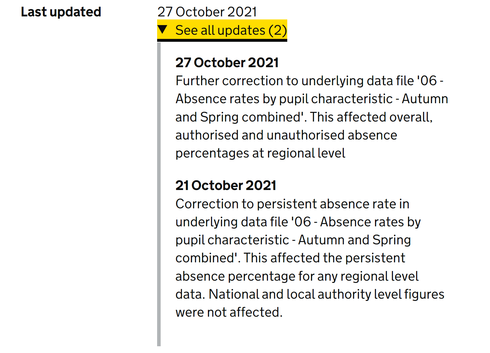
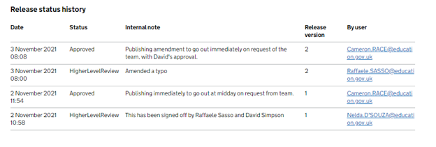

Good examples in EES
Examples of good practice in EES, from file names to content
Files
Files can be downloaded from multiple areas across the platform and often users will judge their contents based on the name alone. For display names, it’s important we make it as clear as possible to users as to what each file contains without cluttering the title with information that is already available from the page around it, saving detailed coverage for the data guidance.
File names
Full guidance for naming files.
The Education and training statistics for the UK release has some good examples of file names which clearly explain what is in the file, while falling well under 35-50 characters in length, e.g.:
- uk_schools.csv
- uk_expenditure.csv
- uk_pupils.csv
The file names do not have time periods in them, making them easier for users to make use of newer versions in future
Subject names
Full guidance for naming subject files.
The School Workforce Census applies this guidance well, with short and simple titles that make sense to a non-expert, e.g.:
- Teacher pay
- Teacher retention
- Subjects taught
These titles are not cluttered with geographies and time periods, which automatically populate in the subject metadata.
Supporting files
Full guidance for using supporting files in EES.
The Initial Teacher Training performance profiles publication is one example of needing to upload a file outside of the regular data/metadata structure. Their provider-level tables also contain national and regional data, which is not supported in EES at the time of writing. The file has a clear title, and data guidance clearly explains what is in the file.

Data guidance
The public data guidance is a key element of your release, to help direct users to the right file to download or build tables with. It is frequently highlighted by users of our stats as a really helpful element of EES. You will be prompted to fill in data guidance in the release checklist. Any release that does not have a complete public data guidance will not be blocked from approval and publishing.
Public data guidance - files
Full guidance for public data guidance.
The School Workforce Census, along with having sensible brief file names, also has great examples of useful data guidance, which explain what is in each file without overloading the user with information:

Public data guidance - overview
Full guidance for public data guidance.
The NEET annual brief is a good example of a public metadata overview section done well. It follows the EES template, goes into just the right amount of detail, and is easy to understand.

Charts and tables
Charts and tables are key ways to highlight important information and stories in your release. They should be clear, contain few footnotes that are essential to interpreting the chart or table, and have good descriptive alternative text so users with screen readers can understand what is being visualised.
Other infographics
Full guidance on using charts built outside of EES.
The Further Education: outcome based success measures release contains infographics that cannot be built in EES. They are saved as SVGs so render clearly on any device, and follows the same colour palette as the rest of the release.

Charts and footnotes
Full guidance on creating charts, and guidance on creating footnotes.
The Widening participation in higher education publication has a good example of a chart built with a long timeseries in the chart builder, with sparing use of footnotes. For example below, a line in the chart indicates a point where comparisons cannot be made, and a key caveat around the comparability of years is included as a footnote, which is needed to interpret the data and chart accurately.

Accessibility and alt-text
Good alt-text descriptions in charts will not just repeat the title of the chart, but instead describe the type of chart, what the data coverage is, and what trends can be seen in the chart to a user accessing the page with a screenreader.
The school workforce census has a good example of alt-text for one of their charts. The associated alt-text for the chart below is: “Line chart showing the percentage of all teachers taking absence across all state funded schools in England between the academic years 2014/15 and 2018/19. The chart shows a fall from 55.7% to 54.0% in this period.”

Featured tables
Full guidance on creating featured tables.
Good featured tables have short, easy to understand titles, and point users to commonly requested tables or other tables that might be interesting to a wide range of users. For example, the pupil absence in schools: autumn term release has a good example of a clear title, with further information (including date and geographic coverage) left in the description. Leaving these out of the main title makes it much easier for users to navigate through multiple featured tables:

Content
Clear, concise content is required to direct your users to the right place, and keep them engaged with your release. Our content guidance page contains a raft of great advice on how to structure your release and write for the general public.
Headlines
Full guidance on creating a headline section
The Education, health and care plans release has a good example of a headlines section. There are a sensible number of key statistics, and the summary below gives an overview of trends without diving into the numbers and overwhelming the user.

The Exclusions release has a good example of custom explanations under key stat tiles to show users exactly what the numbers are describing:

Accordion content
Full guidance on writing content for accordions
The parental responsibility measures release has good examples of writing for the public in accordion content. Content in each accordion is short and follows the “pyramid” principle of having essential information at the top, summarising the trend, then going into detail at the bottom.
Active subheadings
Full guidance on using active headings and titles
The EHCP release has some great examples of active subheadings within accordions, which explain the overall trends without overloading users with detail.
Glossary links
The summary of the CIN / CLA outcomes release has examples of this in action.
Methodology
Full guidance on creating a methodology in EES.
Good methodologies will broadly cover topics in our recommended methodology template. The Graduate outcomes (LEO) methodology broadly follows this outline, making use of effective formatting in EES to help users navigate through accordions, although definitions can be moved to the EES glossary.
The Key stage 4 destinations methodology makes good use of annexes to show changes to their methodology over time.
Approvals and amendments
Keeping track of processes for approving and amending releases is crucial for transparency. Internally, there should be clear paper trail of who has signed off the release, and externally, users need to know if anything in the release has changed from the last time they saw it.
Public amendment notes
Full guidance for creating public amendment notes.
The Pupil absence in England - Autumn and Spring terms publication has some good examples of release notes.
These notes clearly explain to the user what has changed, which files were affected and at what level:

Internal release status notes
Full guidance for creating public amendment notes.
The COVID attendance publication has fortnightly releases at the time of writing, and the team have a good process for sign-off. This includes detailed information at each stage to confirm who has signed off, who has requested an action be taken, and who has carried out the action.
